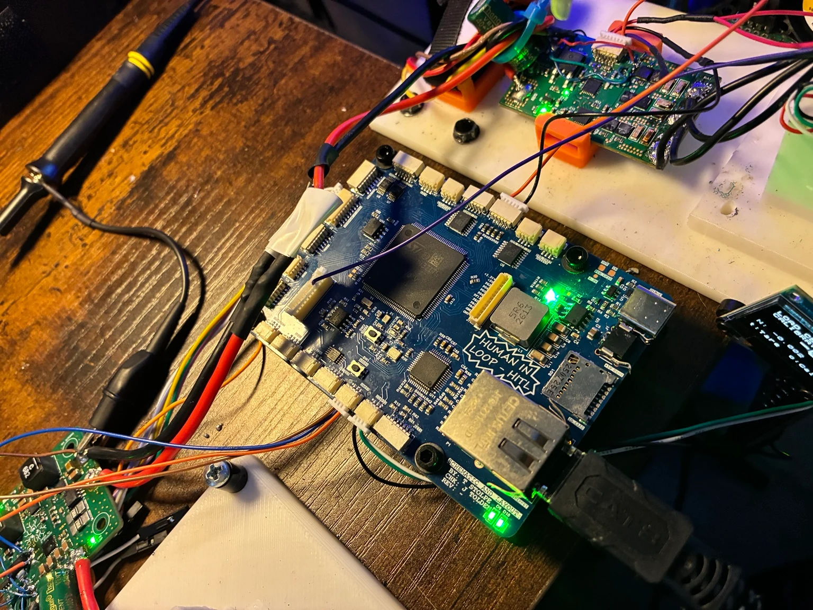

ABOUT / CONTACT
I’m Thomas Stolpe.
I build electronics.
DEESC Prototyping is the home for my work in custom hardware, embedded systems and test development.

FROM MY WORKBENCHFROM THE BOARD TO THE WHOLE SYSTEM
I like the part where
the design becomes real.
My projects connect electrical design to the practical work of assembly, firmware bring-up, debugging and testing. That includes individual boards, useful devices for clients, and larger systems with multiple custom assemblies.
The drone and HITL projects bring those interests together: develop the electronics, build the tools to test them, and use what happens on the bench to guide the next revision.
- Hardware
- Schematics, PCB layout, power and sensing
- Embedded
- STM32, ESP32 and peripheral interfaces
- Integration
- Enclosures, fixtures and connected assemblies
- Test
- Bring-up, instrumentation and measurement logs
GET IN TOUCH
Let’s talk about
what you’re building.
For engineering opportunities, project questions or a closer look at the work.